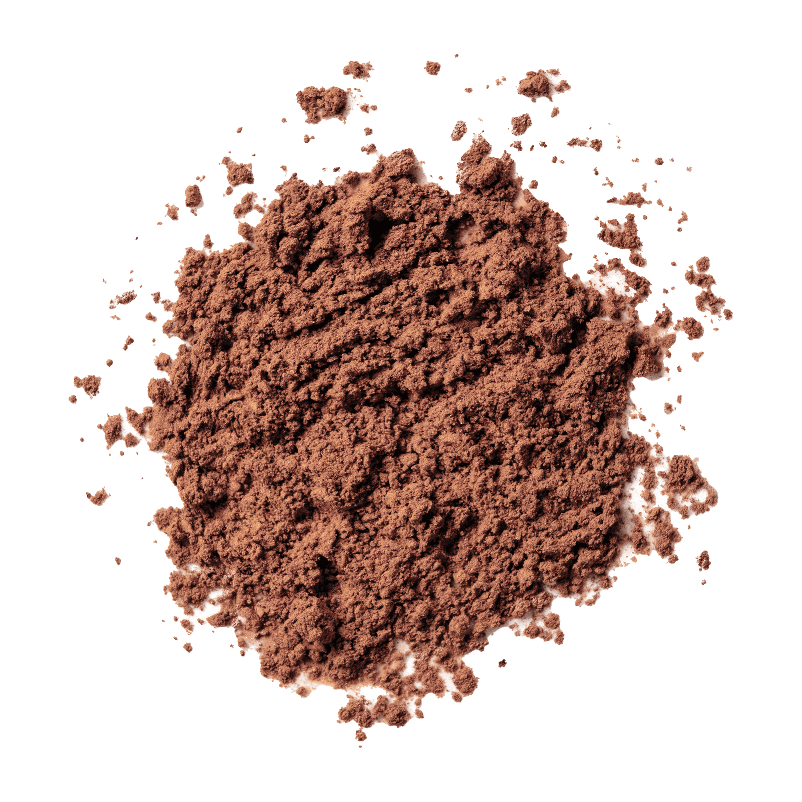
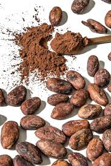

What is Cocoa Powder?
Cocoa powder, an unsweetened chocolate product, adds deep chocolate flavor to desserts and beverages. Cocoa powder occurs when the fat, called cocoa butter, gets removed from the cacao beans during processing. The leftover dried solids get ground into the product sold as cocoa powder.
Varieties
The two basic types of cocoa powder are Dutch process and natural. You'll find them labeled both ways, in addition to products that say "Dutch and natural blend.
"Pure ground cocoa powder has a pH level between 5.3 and 5.8, putting it on the acidic end of the scale. The acidity affects the flavor, the way it interacts with other ingredients, and its solubility.
Natural cocoa powder produced with the Broma process retains the natural pH level. It tends to be more intensely flavored, and a lighter, almost reddish-brown color. The Dutch process (sometimes called "Dutching") bathes the cocoa beans in an alkaline solution, producing a darker brown cocoa powder with a chemically neutral pH of between 6.8 and 8.1, resulting in a more mellow flavor. Dutching also reduces the antioxidant properties of cocoa.
Cocoa Powder Uses
The Dutch process produces a cocoa powder that dissolves more easily, making it easier to work with in recipes such as ice cream and chocolate drinks.
For baking, the type of cocoa you use does matter, because the acidity of the cocoa powder might be the only thing activating the leavening agent in the recipe. If a recipe calls for baking soda, for example, natural cocoa powder works fine, because the acidity in the cocoa activates the baking soda. If a recipe calls for baking powder (or both baking powder and baking soda), then it probably also calls for Dutch-processed cocoa powder.
What Does It Taste Like?
Cocoa powder tastes like chocolate, but without the creamy mouthfeel cocoa butter adds to bar chocolate. Dutch process cocoa tends to taste milder, while natural cocoa powder can have a sharper flavor. For candy making, the types of cocoa powder can usually be used interchangeably; use whichever cocoa you think tastes best.
